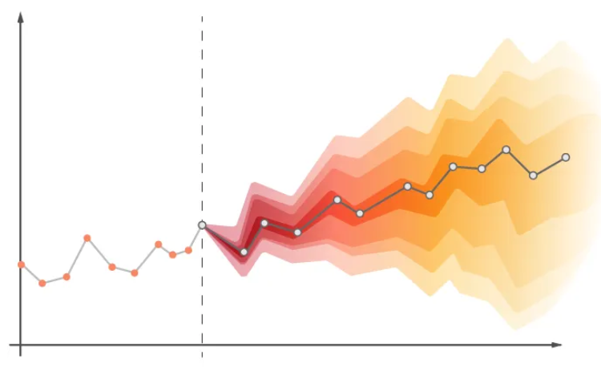
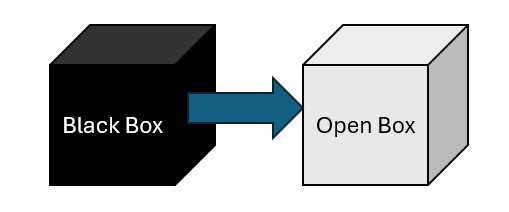
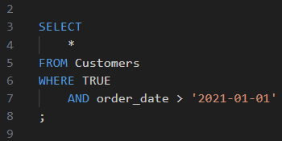
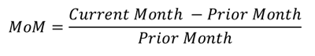

Monthly Active Users: Forecasted the number of monthly active users on a cloud gaming platform in 1-6 month forecasts.
Supply Chain Forecasting: Forecasted the demand amount of units based on the SKU of a refrigerant product taking into account sparse, intermittent, and regularly-occurring data using different time series forecasting models.
Growth Curve Forecasting: Forecasted using nonlinear regression modeling fitting data to a Shifted-Gompertz distribution using an optimization method.

Causal Inference & A/B Testing
Compare Samples of Grouped Data on KPIs
Incremental Lift: Analyzed the incremental impact of categorical levels of store visibility on sales controlling for covariates using a multivariate regression model.
Causal Inference: Analyzed the incremental impact of store relocations on sales for each relocated store using a regression discontinuity design.
Hypothesis Testing: Tested randomization schemes in clinical trials to determine a statistically significant difference in demographic proportions so teams could verify correct randomization.
Gen AI
Prompting LLMs to Generate Knowledge
RAG Modeling: Developed a LangChain pipeline to query internal data using embedding models to generate summaries of key information requested from prompts.
Prompt Engineering: Structuring queries to provide accurate responses by building personas with clear guidelines of expectations while reducing hallucinations.
Model Interpretation
Interpreting the Results of Models
Model Agnostic Methods: Used PDP, ALE, and ICE functions to display the percent increase in the likelihood of a positive sentiment with better or worse performing predictor variable values to determine thresholds.
Model Agnostic Methods: Used Shapley values at a local level to find the influence of store visibility and other variables on store sales to discover outliers in performance.

Data & Analytics Engineering
ETL/ELT Pipelines and SQL Scripts
ETL Pipelines on Airflow: Used Airflow to develop data pipelines joining petabyte-sized core tables into a functional format for a marketing small business unit context.
ETL Pipelines on dbt: Developed a dbt model on a scheduled cadence to create a foundational one-big-table financial transactions model combining raw data tables from orders, fulfillments, exchanges, returns, products, discounts, and more for both online and retail store data from Shopify.
Data Orchestration: Orchestrated data pipelines to automate data ingestion and transformation through cloud functions, pub/sub topics, scheduled scripts, and on-demand scripts.

Data Analysis
Descriptive Statistics on KPIs
Exploratory Data Analysis: Performed exploratory data analysis of model features and response variables to inform model selection, parameter, and hyperparameter tuning.
KPI Creation: Feature engineered foundational KPIs based on absolute financial KPIs (sales, tickets), relative financial KPIs (normalized for larger or smaller stores/trade areas), and interest financial KPIs (interest in the product compared to all other products).
Stakeholder Business Questions: Provided statistical summaries on key business questions from stakeholders and senior management.
KPI Creation: Modeled KPIs including lift, seasonality, benchmarks, and date period comparisons (e.g., MoM, YoY).

Dashboarding & Visualization
Graphically Displaying Summarized Data
Tableau: Developed dashboards on social media marketing program performance based on customer journey, customer benchmarks, call logs, and people analytics from CRM data.
Power BI: Replaced manual reports with dynamic, interactive dashboards for weekly and monthly marketing reports with automated data refresh schedules.
Geospatial Visualizations: Graphically represented GIS raster and shapefiles with data visualizations.